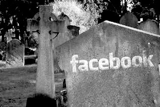

I’ll keep this one short, because there’s a million and one articles about people walking away from the social network. People are writing like they’re revolutionaries leading the mass exodus. I even poked fun at it in my internet predictions. Anyway, at the start of the year I figured I’d give a month away from facebook a try, partially inspired by Leo Babuta’s A Year of Living Without.
I asked myself what value I was actually getting from the service. If I can’t be bothered ringing someone and catching up, then realistically why would I waste time liking their cat photos? I also questioned the value of these facebook friends. Am I actually friends with all these people or is the connection just convenient enough for me to keep them around? Do I actually want to share something with them or am I just boasting? Again, this topic has been discussed ad nauseam, but I’ll link this article and quote it’s final line, “Direct interactions with other human beings led people to feel better”. Again, the article is based on one study, but it adds evidence to a belief I’ve held for quite some time.
Nothing negative, at all. At no point during this month have I felt a desire to return to Facebook. Frankly, I love not knowing. It was very similar sensation to when I stopped following sensationalist media, my life just gained a little more space. If you’re still on the fence consider de-activating for a month and seeing how much you really miss it. You can easily re-activate your account any time you want. For me, put simply I won’t be going back.
February 28, 2014 - Counterfeit Update — Still off Facebook, still not regretting the decision. February 14, 2015 - Still haven’t touched the site. Much to my benefit.